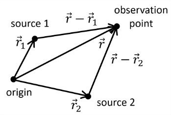

PHYS222-Waves_&_Optics
- Geometric Optics
- Fermat's Principle
- Law of Reflection
- Law of Refraction
- Objects
- Images
- Plane Mirror
- Concave Spherical Mirror
- Convex Spherical Mirror
- Lenses
- Waves
- d'Alembert's Formula
- Harmonic Waves in One Dimension
- Dispersion Relation
- Complex Notation for H-Wave
- 3D Scalar Waves
- Intensity of Harmonic Plane Wave
- Spherical Harmonic Waves
- Diffraction
- Interference
- Lasers
- Polarisation
Geometric Optics
Geometric optics: an approximation assuming the wavelength of light is negligible compared with dimensions of the relevant parts of the optical system. Light can be assumed to usually travel in straight lines, "rays", diffraction is neglected.
Physical optics: in which the wave character of light may not be ignored.
Fermat's Principle
"The actual path between two points taken by a light ray is the one which is traversed in the least time"
To use Fermat’s Principle, we need to know how quickly light travels in a certain medium. We use the refractive index \[n=\frac{c}{v}=\frac{\text{speed of light in vacuum}}{\text{speed of light in medium}}\] Light moves slower in mediums that are not vacuums, meaning \(n\geq 1\). Modifications of Fermat's principle are required for light moving in fluids. For dispersive media, the speed of light depends on frequency. The time of travel does not need to be minimal. Instead, stationary paths (minima, maxima, saddle point) will do. This leads to the modern statement of Fermat’s Principle:
The path taken by a light ray is such that its optical path length is stationary, i.e. the optical path length is approximately equal to that on other adjacent paths, where optical path length = \(\int n\,dl\) and \(dl\) is a line element.
For an arbitrary between points \(A\) and \(B\): \[\text{travel time}=\text{geometric length}\times\underbrace{\frac{n}{c}}_{=v}\]
Law of Reflection
- Specular reflection: for a perfectly smooth surface, parallel rays are reflected as parallel rays.
- Diffuse reflection: from a rough surface, the law of reflection is obeyed locally but the microscopically rough surface results in reflected rays in all directions.
We can consider a ray that bounces off a reflective surface. By symmetry, both the incident and reflected wave must lay in the "plane of incidence", which is the plane that includes the surface normal and the propagation vector of the incoming ray. We can determine the path taken by minimising the travel time with respect to the changes in position. We find \[\sin\theta_i=\sin\theta_r\implies\boxed{\theta_i=\theta_r}\] with \(-\pi/2\leq(\theta_i,\;\theta_r)\leq\pi/2\). This law holds for curved mirrors too.
Law of Refraction
Through the same method we can derive Snell's law \[\boxed{n_a\sin\theta_a=n_b\sin\theta_n}\] Snell’s Law holds for curved surfaces, too.
Critical Angle and TIR
Critical angle when \(\theta_2=\pi/2,\;\theta_1=\theta_c\): \[n\sin\theta_c=n_2\implies\theta_c=\arcsin\frac{n_2}{n_1}\]
Objects
...are something from which light radiates. The light is either emitted by the object itself (e.g. a light bulb filament) or it is emitted by another source and reflected from the object.
- Point object: has no physical extent in space.
- Extended object: has a physical length, width and/or height in space.
Images
when many light rays from an object appear to converge toward or diverge from a point called the image.
- Real image: a point to which the outgoing rays converge; you can project the image on a screen.
- Virtual image: a point from which outgoing rays appear to diverge, although no light passes through the point. If we look at the outgoing rays, we would still see the (virtual) image.
Plane Mirror
Triangles \(SNP\) and \(S'NP\) are equal. Hence all rays appear to originate at image point \(S'\), and \[\begin{align} &\text{Image distance}=\text{Object distance}\\ &S'N=SN\\ &d_i=d_o\\ &\text{Image size}=\text{Object size}\\ &h_i=h_o \end{align}\] \(S'\) is a virtual image. No actual images lie on the right side of the screen so the image could not be projected onto a screen. The image is upright (The black arrows are in the same direction). The image is reversed (left handedness becomes right handedness: see red arrows).
Concave Spherical Mirror
- We have the centre of curvature \(C\): the centre of the sphere of which the mirror is part.
- Radius of curvature \(R\): The radius of the sphere.
- Vertex \(V\): The centre of the mirror surface.
- Optic axis \(CV\): The line passing through \(C\) and \(V\)
Sign Rules:
- Object distance \(d_o\), when the object is on the same side as the reflecting or refracting surface \(d_0\) is positive
- Image distance \(d_i\), when the image is on the same side as the outgoing light then \(d_i\) is positive.
- Radius of curvature \(R\), when the centre of curvature \(C\) is on the same side as the outgoing light, then \(R\) is positive.
We have the spherical mirror equation \[\frac{1}{d_0}+\frac{1}{d_i}=\frac{1}{f},\qquad f= \frac{R}{2}\equiv\text{focal length}\] For small angles with the optical axis. When \(d_o\) is at infinity, the rays are parallel, and obviously \(d_i=f\).
Image of an Extended Object
The extended object \(PQ\) has image \(P'Q'\). The lateral magnification, \(m\) is the ratio of the image height \(h_i\) to the object height \(h_o\): \[m=\frac{h_i}{h_o}\] Triangles \(PQV\) and \(P'Q'V\) are similar, hence \[\tan\theta=\frac{h_o}{d_o}=-\frac{h_i}{d_i}\implies m=-\frac{d_i}{d_o}\]
Convex Spherical Mirror
For a convex mirror, the sign convention gives \(R\lt0\). We can use the same equations as for the concave mirror as long as we are careful with signs.
Lenses
For a spherical surface we have \[\frac{n_a}{d_o}+\frac{n_b}{d_i}\approx\frac{n_b-n_a}{R}\] and \[m=\frac{h_i}{h_o}=-\frac{n_ad_i}{n_bd_o}\]
- Real object: a point from which incoming rays diverge.
- Virtual object: a point to which incoming rays appear to converge.
Thick Lens
For this example we have \(R=5\text{cm}\), \(n_a=1\), \(n_b=1.33\), \(d_{1o}=30\text{cm}\), \(h_{1o}=1\text{cm}\).
First refraction: The figure shows a real image after refraction (dashed lines) tall purple arrow. Using the first lens equation \[d_{1i}=\frac{n_bR_1d_{1o}}{d_{1o}(n_b-n_a)-n_aR_1}=40\text{cm}\] and \[m_1=-\frac{n_ad_{1i}}{n_bd_{1o}}=-1.00\] This means that the image arising from the first refraction is real, inverted and of unit magnification. Second refraction: Now the light refracts on the right side of the sphere. The image from the first refraction acts as a virtual object (the incoming rays appear to converge to it).
- We have to take into account lens thickness \(d_{2o}=-d_{1i}+t=-30\text{cm}\) This is negative because the object is not on the side of the incoming light.
- \(C\) is now not on the side of the outgoing light, so \(R_2=-R=-5\text{cm}\).
Thus \[d_{2i}=\frac{n_aR_2d_{2o}}{d_{2o}(n_a-n_b)-n_bR_2}=9\text{cm}\] \[m_2=-\frac{n_bd_{2i}}{n_ad_{2o}}=0.4\] Thus the final magnification \[m=m_1m_2=-0.40\] Thus the image is magnified, real and upright (compared to virtual object), but inverted compared to original object.
Thin Lens
Combine the equations for the two refractions to get \[\frac{1}{d_o}+\frac{1}{d_i}=\frac{(n_b-n_a)}{n_a}\left(\frac{1}{R_1}-\frac{1}{R_2}\right)\] Focal length is the point at which parallel rays converge. For \(d_o\to\infty\), set \(f=d_i\), and \[\frac{1}{f}=\frac{(n_b-n_a)}{n_a}\left(\frac{1}{R_1}-\frac{1}{R_2}\right)\] and we have the thin lens equation \[\frac{1}{d_o}+\frac{1}{d_i}=\frac{1}{f}\]
Graphical Method
Converging lens (\(f\gt 0\)):
We use this picture to derive the same result. Diverging lens (\(f\lt 0\)):
We can derive the same result again but care must be used with signs.
Spherical Lenses
Like spherical mirrors, spherical lenses focus parallel rays only in the first order approximation.
Magnifier
A converging lens can be used as a magnifier: the bigger the angular size of the image, the bigger image is formed by the eye.
Angular magnification: \[M=\frac{\theta'}{\theta}=\frac{25\;\text{cm}}{f}\] (We use 25cm as it is the near point of the eye.)
Waves
We have the very well known wave equation \[\frac{\partial^2u(x,t)}{\partial x^2}-\frac{1}{v^2}\frac{\partial^2u(x,t)}{\partial t^2}=0\] \[\nabla^2u-\frac{1}{v^2}\frac{\partial^2u}{\partial t^2}=0\] The solutions of which are any twice differentiable function expressed in the following \(u=\varphi(x-vt)\) and \(u=\psi(x+vt)\) where the former describes a right moving wave and the latter left. Using the superposition principle (as the wave equation is linear): \[u(x,t)=\varphi(x-vt)+\psi(x+vt)\]
d'Alembert's Formula
It’s possible to go one step further and write down a general solution to the wave equation in terms of initial conditions. Consider the following initial conditions where \(f\) and \(h\) are two given functions: \[\begin{align} &u(x,0)=f(x)\\ &u'(x,0)=h(x) \end{align}\] Then we can claim that we can write the general solution \[u(x,t)=\frac{1}{2}\left[f(x+vt)+f(x-vt)\right]+\frac{1}{2v}\int^{x+vt}_{x-vt}h(z)\,dz\]
Harmonic Waves in One Dimension
A one-dimensional harmonic wave is a function that depends on \(x\) and \(t\) in the form \[u(x,t)=A\sin(kx-\omega t+\delta)\] Using \(\tilde{\delta}=\delta-\pi/2\) \[u(x,t)=A\cos(kx-\omega t+\tilde{\delta})\] If we use \(B=A\cos\delta\), \(C=A\sin{\delta}\) and the identity \(\sin(a+b)=\sin(a)\cos(b)+\cos(a)\sin(b)\) we can find \[u(x,t)=B\sin(kx-\omega t)+C\cos(kx-\omega t)\]
Dispersion Relation
The differential equation that determines the physical system (or the “medium”) gives a relation between \(\omega\) and \(k\), called the dispersion relation, which is usually written in the form \[\omega=\omega(k)\] From this we can find the phase velocity and group velocity \[v_p=\frac{\omega}{k};\qquad\qquad v_g=\frac{d\omega}{dk}\]
Phase Velocity
This is independent of time. So, a body travelling with the phase velocity has a constant phase. Its the speed of a point of constant phase (think crest or trough) moves.
Group Velocity
Consider two harmonic waves with identical amplitudes and phase shifts. We can use a rearranged cosine addition formula to find \[u_1+u_2=2A\cos\left(\frac{k_1-k_2}{2}x-\frac{\omega_1-\omega_2}{2}t\right)\left(\frac{k_1+k_2}{2}x-\frac{\omega_1+\omega_2}{2}t\right)\] This produces envelopes (beats) that move with the group velocity. We can derive the dispersion relation by solving the wave equation with ansatz \(u=A\sin(kx-\omega t+\delta)\) and it yields that \(\omega=vk\), so in this case \(v=v_p=v_g\).
Complex Notation for H-Wave
\(u(t)=A\cos(\omega t+\beta)\) can be written as the real part of an appropriately defined complex function \(\Phi(t)\): \[u(t)=\Re[\Phi(t)]\;\quad \Phi=Ae^{i(\omega t+\beta)}\]
3D Scalar Waves
We can generalise the harmonic 1D wave to 3D by using \[u(\mathbf{r},t)=A\sin(\mathbf{r}\cdot\mathbf{k}-\omega t+\delta)\] where \(\mathbf{k}\) is the wave vector. We then have \(\lambda=2\pi/|\mathbf{k}|\).
Intensity of Harmonic Plane Wave
The intensity \(I(\mathbf{r})\) is the time average of \(u^2(\mathbf{r},t)\): \[I(\mathbf{r})=\overline{u^2(\mathbf{r},t)}=\frac{1}{T}\int^T_0u^2\,dt\] \[=A^2\frac{\omega}{2\pi}\int_0^{2\pi/\omega}\sin^2(\mathbf{k}\cdot\mathbf{r}-\omega t+\delta)\,dt\] Use sub \(\theta=\omega t\) and identity \(\frac{1}{2\pi}\int_0^{2\pi}\sin^2(\alpha-\theta)d\theta=0.5\) \[I(\mathbf{r})=\frac{A^2}{2}\]
Integral of the Square Trig Functions
\[\frac{1}{T}\int_0^T\sin^2(\alpha-\theta)d\theta\] We can use the even nature of \(\sin^2\) to write \(\sin(\alpha-\theta)=\sin(\theta-\alpha)\) and then neglect the phase shift as we're integrating over a period, so the integral becomes \[\frac{1}{T}\int_0^T\sin^2(\theta)d\theta\] We now use double angle formula to write \[\frac{1}{2T}\int_0^T(1-\cos2\theta)\,d\theta\] which equals \[\frac{1}{T}\int_0^T\sin^2(\alpha-\theta)d\theta=\frac{1}{2}\]
Spherical Harmonic Waves
A spherical harmonic solution of the wave equation is given by \[u=\frac{A}{r}\sin(kr-\omega t+\delta)\] where \(r=\sqrt{x^2+y^2+z^2}\).
Intensity of Spherical Harmonic Wave
We can do the same derivation for intensity to find \[I(\mathbf{r})=\frac{A^2}{2r^2}\] The intensity integrated over a sphere of radius \(r\) is \[2\pi A^2\]
Diffraction
Huygens’ Principle: every point in a wavefront is the source of an elementary wave (called a "wavelet") which propagates in all directions with the speed of the wave. Later wavefronts are the envelopes of these wavelets at fixed time.
This principle can be used to derive the laws of reflection and refraction, as well as give an intuition to diffraction.
Huygens’ Principle indicates that waves propagates into a geometric shadow. This is called diffraction.
This is slightly inaccurate as it would suggest light travels backwards towards source.
Obliquity Factor
Huygens-Fresnel Principle: Every unobstructed point of a wavefront, at a given instant, serves as a source of spherical secondary wavelets. The amplitude of the optical field at any point beyond is the superposition of all these wavelets.
To take account of the fact that a wave shouldn’t move backwards towards the source, Fresnel introduced the obliquity factor \(F(\theta)\) into the wave amplitude, where \[F(\theta)=\frac{1}{2}(1+\cos\theta)\] and \(\theta\) is the angle with respect to the forward direction (i.e. the angle made with the normal to the primary wavefront).
Fraunhofer Diffraction
Fraunhofer diffraction:
- the light source is so far away from the aperture that incoming wavefronts may be considered as plane;
- the observation screen is so far away from the aperture that the fronts of the wavelets, originating from the points of the aperture, can be considered as plane when they arrive at the screen.
Fresnel diffraction: otherwise.
Two Narrow Slits
Consider two narrow slits with separation \(a\). If the slits are very narrow, the resulting wave is the superposition of just two wavelets, centred in the slits. As we assume Fraunhofer diffraction, the wavelets can be approximated as plane harmonic waves near the screen.
Wavelets from the first slit: \[u_0=\Re\left\{Ae^{i(\mathbf{k\cdot\mathbf{r-\omega t}})}\right\}\] For the second wavelet the distance to the screen is longer by \(a\sin\theta\), so it has a phase shift of \(\Delta=ka\sin\theta=(2\pi a\sin\theta)/\lambda\) \[u_1=\Re\left\{Ae^{i(\mathbf{k}\cdot\mathbf{r}-\omega t+\Delta)}\right\}\] The superposition of them is \[u=\Re\left\{2Ae^{i(\mathbf{k}\cdot\mathbf{r}-\omega t+\frac{\Delta}{2})}\cos\frac{\Delta}{2}\right\}\] \[u=2A\cos{\left(\mathbf{k}\cdot\mathbf{r}-\omega t+\frac{\Delta}{2}\right)}\cos\frac{\Delta}{2}\] The intensity is \[I(\theta)=2A^2\cos^2\left(\frac{\Delta}{2}\right)\] We can use \(I(0)=2A^2\) \[I(\theta)=I(0)\cos^2\left(\frac{\pi a\sin\theta}{\lambda}\right)\] We have minima at \(\cos(\Delta/2)=0\) and maxima at \(\cos(\Delta/2)=\pm 1\). We can find \[n\lambda=a\sin\theta\]
Diffraction Grating
We can generalize to \(N\) narrow slits with equal separation \(a\). So we sum \(N\) wavelets, each with a phase shift \(2\pi a\sin\theta / \lambda\) relative to the last one \[u=\Re\left\{Ae^{i(\mathbf{k}\cdot\mathbf{r}-\omega t)}\left(1+e^{i\Delta}+e^{i2\Delta}+\ldots+e^{i(N-1)\Delta}\right)\right\}\] This is just a geometric series s.t. \(\sum^n_{m=o}ar^m=a(1-r^{n+1}/(1-r))\) \[\begin{align} &u=\Re\left\{Ae^{i(\mathbf{k}\cdot\mathbf{r}-\omega t)}\left(\frac{1-e^{iN\Delta}}{1-e^{i\Delta}}\right)\right\}\\ &u=A\cos\left(\mathbf{k}\cdot\mathbf{r}-\omega t+(n-1)\frac{\Delta}{2}\right)\frac{\sin(N\Delta/2)}{\sin(\Delta/2)} \end{align}\] We can work out the intensity to be \[\frac{A^2}{2}\frac{\sin^2(N\Delta/2)}{\sin(\Delta/2)}\] To determine \(I(0)\) we can use the Taylor expansion.
Single Slit
We can use the limit of a grating. Let the slit be of width \(b\) and let \(b=Na\), then send \(N\to\infty\implies a\to0\). We also find similar results to above.
Circular Aperture
The diffraction pattern of a circular aperture of diameter \(D\) produces a series of circles
The angular radius of the airy disk is \[\sin\theta\approx\frac{1.22\lambda}{D}\] Because of diffraction images from telescopes occupies the region of the airy disk. The image has radius \(r=f\tan\theta\) but for small angles, the image has radius \(r\approx1.22f\lambda/D\).
Rayleigh Criterion
To resolve two images, the centre of the image patterns must be no nearer than the angular radius of the airy disk, i.e. the maximum of one pattern lies directly on the first minimum of the other. The angular separation \(\alpha\) of the two sources should be larger than the radius of their airy disk: \[\sin\alpha\gt\frac{\lambda}{D}\]
Fresnel Diffraction
Fresnel diffraction is more difficult to model than Fraunhofer. We will only consider one example: a light source far from the aperture so that the incoming wavefront can be considered as plane, but the observation screen is at a finite distance; calculate intensity on the axis of symmetry for a circular aperture.
The outer edge of each Fresnel zone is a distance \(r_N=r_0+N\lambda/2\) from the observation point \(P\). At \(P\) we consider the phase difference between wavelets coming from the edge of each successive Fresnel zone. \[\text{phase diff}=\underbrace{k(r_{N+1}-r_N)}_{k\times\text{path diff}}=\frac{k\lambda}{2}=\pi\] Each successive zone’s contribution is out of phase with that of the preceding one. We now subdivide each zone into \(K\) concentric rings, with a constant phase difference \(\pi/K\) between subsequent rings. For the first zone, add up \(K\) phasors (geometric series \(S_K=(1-r^K)/(1-r)\)): \[S_K=e^0+e^{i\pi/K}+e^{i2\pi/K}+\ldots\] \[S_K=\frac{2}{1-e^{i\pi/K}};\qquad\qquad\pi/K\ll1\implies S_K\approx\frac{2i\pi/K}{2(1-\cos(\pi/K))}\]This has phase of \(\pi/2\), so the resultant is straight up the imaginary axis. The second zone has a phase of \(3\pi/2\) which cancels out the first zone. This is true for any pair of \(N\) and \(N+1\) zones. We have considered phases, but assumed that the intensity from all rings is the same (i.e. phasors of equal length). This is basically correct as long as the obliquity factor is approximately \(1\) (angle \(\theta\) is small). Then, the amplitude of each wavelet falls off equally in all spatial directions; the total amplitude at \(P\) from a given ring zone grows with area \(A\) of the zone and it goes like \(1/r\), the inverse distance of the ring zone to \(P\). But, their ratio is approximately the same for all zones: \[\frac{A}{r}=\frac{\pi\lambda}{K}\left(1+\frac{\lambda}{4Kr}\right)\approx\frac{\pi\lambda}{K}\] (using \(\lambda\ll r\)).
Fresnel Zone Plate
Radius of the \(N\)th zone: \[R^2_N=(r_0^2+N\lambda/2)^2-r_0^2\approx N\lambda r_0\] for \(r_0\gg\lambda\).
Fresnel Number
The Fresnel number provides a quantitative criterion for distinction between Fraunhofer and Fresnel diffraction. Consider the radius of the first zone: \[R_1^2\approx r_0\lambda\] Use this to estimate the number of zones in an aperture of radius \(a\): \[\text{num of zones}\approx\frac{\text{area of aperture}}{\text{area per zone}}\approx\frac{a^2}{R^2_1}=\frac{a^2}{r_0\lambda}\equiv F\] Thus the Fresnel number \(F=a^2/r_0\lambda\) distinguishes
- \(F\ll1\) Fraunhofer diffraction
- \(F\gtrsim 1\) Fresnel diffraction
- \(F\gg1\) Geometric optics.
Interference
Interference means superposition of two or more waves which enhance each other in some regions (“constructive interference”) cancel each other, exactly or approximately, in other regions (“destructive interference”). This results in interference patterns. Interference patterns can only be observed if the superposed waves are “coherent”, i.e., if they have a constant relative phase.
Band width
For simplicity consider a wave train (a series of waves that travel together) being a harmonic wave given by \[F(t)=\left\{\begin{array}{lll} A\cos\omega_0t & &\text{if}-\frac{\tau_0}{2}\lt t\lt\frac{\tau_0}{2}\\ 0 & & \text{otherwise} \end{array}\right.\] The average duration \(\tau_0\) is called the coherence time of the light source. The frequency transform \(G(\omega)\) is given by the Fourier transform of \(F\). If the wave train contains many periods (\(\omega_0\tau_0\gg 2\pi\)) we can approximate \(G(\omega)\) near \(\omega_0\) by \[G(\omega)\approx\frac{A\tau_0}{4\pi}\frac{\sin[(\omega-\omega_0)\tau_0/2]}{(\omega-\omega_0)\tau_0/2}\] The first zero of this function occurs for \[\sin\left(\frac{(\omega-\omega_0)\tau_0}{2}\right)\implies \omega-\omega_0=\pm\frac{2\pi}{\tau_0}\] Hence, the "band width" \[\Delta\omega=\frac{2\pi}{\tau_0}\] is a measure of the frequency interval that contributes essentially to the wave train.
Temporal and Spatial Coherence
Temporal (longitudinal) coherence is a measure of the correlation of the wave’s phase at different points along the direction of propagation – the temporal coherence length \(l_0\) is the distance travelled by light in the coherence time \(\tau_0\). Spatial (transverse) coherence is a measure of the correlation of a wave’s phase at different points transverse to the direction of propagation - it tells us how uniform the phase of a wave front is.
Creating a Coherent Source
A light bulb is an extended source emitting many wavelengths. It has no temporal or spatial coherence.
- Adding a pinhole limits the spatial extent of the waves and causes better spatial coherence.
- Adding a filter restricts the band of wavelengths that can pass and therefore improves temporal coherence. (But the power is decreased).
Two Beam Interference
Consider superposition of two harmonic waves with the same frequency at a fixed point in space: \[\begin{align} &u_{1,2}(t)=A_{1,2}\cos(\omega t+\delta_{1,2})\\ &u=u_1+u_2 \end{align}\] Intensities \[\begin{align} &I_{1,2}=\frac{A^2_{1,2}}{2}\\ &I=\frac{1}{T}\int_0^Tu^2\;dt=\ldots\,? \end{align}\] To calculate intensity use complex notation \[u(t)=\Re\left\{e^{i\omega t}\left(A_1e^{i\delta_1}+A_2e^{i\delta_2}\right)\right\}=\Re\left\{e^{i\omega t}\left(re^{i\phi}\right)\right\}\] thus \[u(t)=r\cos(\omega t+\phi)\implies I=\frac{r^2}{2}\] Now, to find \(r\), we multiply a complex number with its conjugate: \[r^2=\left(A_1e^{i\delta_1}+A_2e^{i\delta_2}\right)\left(A_1e^{-i\delta_1}+A_2e^{-i\delta_2}\right)\] such that \[r^2=A^2_1+A^2_2+2A_1A_2\cos(\delta_2-\delta_1)\] now we use \(I=r^2/2\), \(I_1=A^2_1/2\), \(I_2=A^2_2/2\) to find \[I=I_1+I_2+2\sqrt{I_1I_2}\cos(\delta_2-\delta_1)\] We can now ask for the link between phase difference and difference in optical path length. In a medium with constant refractive index \(n\) consider two coherent sources of frequency \(\omega\) at points \(\mathbf{r}_1\) and \(\mathbf{r}_2\).

At the point with position vector \(\mathbf{r}\): \[u_1(\mathbf{r},t)=\frac{B_1}{|\mathbf{\mathbf{r}-\mathbf{r_1}}|}\cos(\omega t-k|\mathbf{r}-\mathbf{r}_1|)\] \[u_2(\mathbf{r},t)=\frac{B_2}{|\mathbf{\mathbf{r}-\mathbf{r_2}}|}\cos(\omega t-k|\mathbf{r}-\mathbf{r}_2|)\] Hence the phase difference is \[\delta_2-\delta_1=k(|\mathbf{\mathbf{r}-\mathbf{r_1}}|-|\mathbf{\mathbf{r}-\mathbf{r_2}}|)\] We use \(k=\omega/v=\omega n/c\): \[\delta_2-\delta_1=\frac{\omega}{c}(n|\mathbf{\mathbf{r}-\mathbf{r_1}}|-n|\mathbf{\mathbf{r}-\mathbf{r_2}}|)\] Thus \[\text{Phase diff}=\frac{2\pi}{\text{vacuum $\lambda$}}\text{diff in optical path len}\] If \(n\) varies, the OPL must be written using \[n|\mathbf{r}-\mathbf{r}_1|\to\int_{P_1}n\,ds\]
Lasers
Lasers cannot be understood in terms of classical optics; the quantum theory of light is required.
Spontaneous vs Stimulated Emission
Spontaneous emission happens when a hot gas has atoms within it where electrons drop from higher to lower energy levels. The emitted light is of energy \(hf=E_2-E_1\) where each \(E\) represents the energy levels within the electron. This happens spontaneously with a certain probability. Phases of emitted light vary randomly. Stimulated emission happens when light with frequency \(hf=E_2-E_1\) is incident on the medium, such that emission of a photon with the same frequency is stimulated. Its phase and direction coincide with those of the incoming light, thus its possible to produce coherent light.
This requires population inversion ("pumping"): a higher energy level is more populated than a lower one so emission dominates over absorption. Amplification is reached by putting the medium in a resonator ("optical cavity") s.t. light is reflected back and forth through the medium.
Medium
The medium determines the wavelength (ruby \(693\text{nm}\), neon \(633\text{nm}\) CO2 \(11\mu\text{m}\)). It can be
- Gas
- Solid (crystal doped with ions, semiconductor, etc)
- Liquid
The medium must have a metastable state. When pumped, electrons go into excited states. As they drop back towards the ground state, some get trapped in the metastable state (lifetime typically \(10^{-3}\)s rather than \(10^{-8}\)s).
Pump
The pump is an energy source that produces population inversion. It can be
- Optical
- Electrical
- Thermal
e.g., He-Ne laser, use electrical discharge to produce free electrons which collide with and excite the laser atoms.
Resonator
The resonator consists of plane or slightly curved mirrors. For a plane-parallel resonator of length \(L\), there will be resonance for \(L=n\lambda/2\) where \(n\) is integer. The resonator directs photons back and forth through the laser medium, creating a standing wave of well-defined wavelength (any photons of different wavelength or not aligned with the axis will exit the resonator). One mirror has reflectivity 100%, the other mirror is less than 100% to allow part of the beam to escape and be the laser output. The laser output contains \(\lambda\) supported by the resonator.
Energy Cycle (4 Level)
- Electrons are pumped to the pump level.
- The pump level quickly decays (typically \(10^{-8}\)s). Some electrons go the ground state; some electrons get stuck in the metastable state. The metastable level at \(E_2\) (lifetime typically \(10^{-3}\)s) decays by stimulated emission.
- Level \(E_1\) quickly decays to the ground level. Because \(E1\) decays quickly, population \(E_2\gg\) population \(E_1\). This is vital so that emission dominates absorption.
Polarisation
Light is not a scalar wave, but rather it is described by two vector fields \(\mathbf{E}\) and \(\mathbf{B}\) that satisfy Maxwell’s equations. The vector character is largely irrelevant for diffraction and interference, but it is crucial for understanding polarisation. In a medium with constant permittivity \(\epsilon-e\) and constant permeability \(\mu_r\): \[\mathbf{D}=\epsilon_r\epsilon_0\mathbf{E}\qquad\qquad\mathbf{B}=\mu_r\mu_0\mathbf{H}\] a plane harmonic wave is completely determined by the electric field \[\mathbf{E}(\mathbf{r},t)=\mathbf{E}_0\cos(\mathbf{k}\cdot\mathbf{r}-\omega t+\alpha)\] The corresponding magnetic field is given by \[\mathbf{B}(\mathbf{r},t)=\frac{1}{c}\underbrace{\frac{\mathbf{k}}{k}}_{\mathbf{\hat{n}}}\times\mathbf{E}(\mathbf{r},t)\] where \(c=vn=1/\sqrt{\epsilon_r\mu_r}\).
Linear Polarisation
An em wave in the form above with constant \(\mathbf{E}_0\) is called linearly polarised.
For an observer seeing this coming towards them, it seems to oscillate in a line. Superposition of two linearly polarised waves with the same wave vectors, the same frequencies and the same phase shifts, gives another linearly polarised wave. If the phase shifts are different, this is no longer the case. Some special cases are…
Circular Polarisation
If the two waves have: \[\mathbf{E}_{01}\cdot\mathbf{E}_{02}=0,\quad|\mathbf{E}_{01}|=|\mathbf{E}_{02}|,\qquad|\alpha_2-\alpha_1|=\pi/2\] and are superposed, this gives a circularly polarised wave.
Elliptical Polarisation
If the two waves have: \[\mathbf{E}_{01}\cdot\mathbf{E}_{02}=0,\quad|\mathbf{E}_{01}|\neq|\mathbf{E}_{02}|,\qquad|\alpha_2-\alpha_1|=\pi/2\] and are superposed, this gives an elliptically polarised wave.
Brewster's Angle
We can define Brewster's angle \(\theta_B\) as \[\tan\theta_B=\frac{n'}{n}\implies\theta_B'=\pi/2-\theta_B\] Hence, for \(\theta=\theta_B\) the transmitted ray is perpendicular to the reflected ray. Thus: if unpolarised light is incident at Brewster’s angle, the reflected light is linearly polarised perpendicular to the plane of incidence (the transmitted wave is partially polarised)
Scattering
Microscopic explanation of light scattering:
- incoming electromagnetic wave causes electrons to oscillate
- oscillating electrons radiate light (dipole radiation)
Rayleigh Scattering - Wavelength \(\gg\) size of radiating particles. Particles can be viewed as being obstructions to waves, and their effectiveness depends on their size as compared to the light’s wavelength. Thus, long wavelengths are scattered less effectively: \[\text{scattered intensity}\propto\frac{1}{\lambda^4}\sim\omega^4\] For example
- Sky is blue as blue is scattered most efficiently.
- Sun is yellow, as white-blue=yellow.
- Sunset is red, more scattering.
For scattering by larger particles, all wavelengths are scattered equally. For example
- Cloudy are white
- Milk is white (fat droplets in water)
Polarisation by Absorption
Microwaves have wavelength \(\lambda\) typically from 1mm to 1m. Consider a metal wire grid with spacing \(\ll\lambda\), with unpolarised incident light:
- \(\mathbf{E}\) parallel to the wires (horizontal): the field induces electron motion in the wires so light is reflected (as at the surface of a bulk metal).
- \(\mathbf{E}\) perpendicular to the wires (vertical): the electrons can barely move, so there is no response and light passes. The outgoing light is linearly polarised in the direction perpendicular to the wires (this is a bit counterintuitive!)
Malus' Law
With two polarisation filters ("polariser" and "analyser") the intensity \(I\) of transmitted light depends on the angle \(\theta\) between the transmission axes of the filters \[I=I_0\cos^2\varphi\cos^2\theta\quad\text{For initally polarised light}\] \[I=\frac{I_0}{2}\cos^2\theta\qquad\text{For diagram below}\]